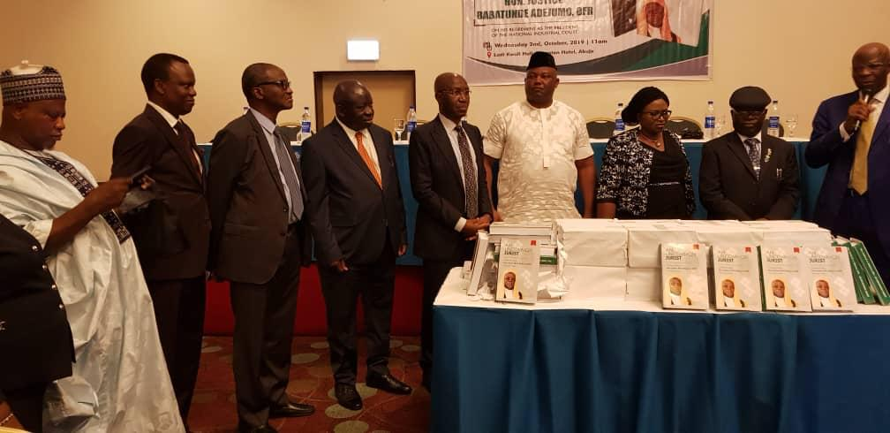

Following the retirement of Justice Babatunde Adejumo OFR as the president of the National Industrial Court, a book presentation, website and app launch was held by Funmi Quadri & co in his honor.
The event took place at the Sheraton Hotel, Abuja and in attendance were the President of the Court of Appeal, Hon. Justice Zainab Bulkachuwa, President of the National Industrial Court, Hon Justice B.B Kanyip, Chief Wole Olanipekun, SAN, Chief Akin Olujinmi, SAN, former Attorney General of the Federation, Professor Akinseye-George, SAN, Hon, Babatunde Ogala, National Legal Adviser of the APC, amongst others.
Justice Babatunde Adejumo has truly distinguished himself as an icon worthy of emulation. We can indeed say that the judiciary has truly been reformed by a man of great courage, strength and resilience.
It is phenomenal that having started out as an apprentice shoe maker, he worked his way to the top and became the President of the National Industrial court, making a huge and impressive turnaround of the Court.
His Lordships career in the legal field begun in the chambers of J. Osuolale Ojo Esq. of blessed memory). He later became a Hon. Member of the House of Assembly, Akoko North West Constituency in the old Ondo state House of Assembly. Hon. Justice Adejumo later became the Chief Magistrate of the Ikere Magisterial District, Ondo state between 1994-1995 till he was appointed as the Deputy Chief Registrar of The Supreme Court of Nigeria in December 1995.
The climax of his lordships judicial career was when he was appointed as the President of the National Industrial Court by the then President, Olusegun Obasanjo on the 14th of April, 2003.
At the period his Lordship assumed duty, there were only 123 staff with only 5 of them being graduates. However, as of this moment, the National Industrial Court has over 3,500 staff with over 500 being graduates.
It is also noteworthy that as opposed to only three members as at the time he assumed office, the National Industrial court now has over 37 judges.
Justice Adejumo in a view to make the court more efficient (which was negatively affected by the power of the minister of Labour), his lordship along with his team moved for a review of the laws. On the 31st day of May 2006, the National Assembly passed the National Industrial Court Act 2006 making the court a superior court of record and giving it exclusive jurisdiction in relation to labour and industrial matters.
The celebration was however cut short following the decision of the Supreme Court in N.U.E.E. v. B.P.E; where the Supreme Court per Eneh J.S.C stated inter alia;
“It means therefore that by Decree No. 47 of 1992 arrogating to the National Industrial Court at superior court of record as has been contended by the appellants does not by that token make the said National Industrial Court a superior court of record without any amendment of the provisions of Section 6(3) and (5) of the 1999 constitution which has listed the only superior courts of record recognized and known to the 1999 Constitution and the list does not include the National Industrial Court; until the Constitution is amended it remains a subordinate court to the High Court.
Instead of being chagrined and dismayed by the decision of the court, his Lordship rather focused on the dream he had and what could become of it. His Lordship paid attention to the hint of the Supreme Court in the aforementioned decision where the Court stated in page 572 paragraph B; ”until the constitution is amended it remains a subordinate court to the High Court…” and took actions.
His lordship, Justice Adejumo took to the National Assembly to enlighten and give solid reasons for his grounds. True victory was his this time as the actions led to the passage of the Third Alteration (Act), 2010 which was assented to by His excellency, then President of the Federal Republic of Nigeria, Dr. Goodluck Jonathan, GCFR on the 4th of March, 2011. Consequently, the National Industrial Court was conferred with constitutional superiority under Section 6(5)(cc) and 254A of the 1999 constitution of the Federal Republic of Nigeria.
It was indeed a great and successful event hosted by the law firm Funmi Quadri & co. The book is titled “An Uncommon Jurist” and readers are given insight to this incredible man through cases. An app was also launched to commemorate his glorious retirement from service with a website www.justiceadejumo.com courtesy of Funmi Quadri & co.
Please fill out the form below to send us an email and we will get back to you as soon as possible.
AddressPlot 2979, Dominic Iyang Close
Off Tai Solarin Crescent, Gwarinpa Abuja
Phone +2348131210744
+2348028739781
+2348170000662
+2348036082370
Email info@funmiquadrionline.com